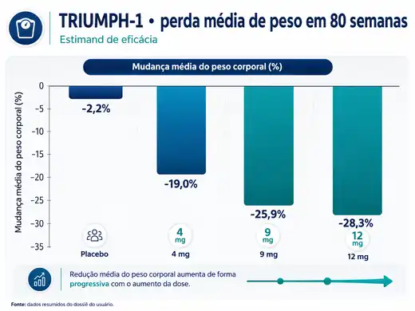

Fase 3
Desenvolvimento clínico
Obesidade, diabetes tipo 2, osteoartrite, apneia obstrutiva do sono e desfechos cardiometabólicos.
A retatrutida (LY3437943) é um peptídeo investigacional de ação prolongada que combina agonismo dos receptores GIP, GLP-1 e glucagon. Este dossiê reúne mecanismo, desenvolvimento clínico, Fases 1–3, eficácia, segurança, desistências, benefícios além da perda de peso, comparação com tirzepatida e rota regulatória.

A história já não é apenas “promissora”: o programa acumulou cinco resultados positivos de Fase 3 no corte temporal do dossiê. Ainda assim, não havia indicação aprovada nem revisão formal concluída.
Obesidade, diabetes tipo 2, osteoartrite, apneia obstrutiva do sono e desfechos cardiometabólicos.
Sem bula comercial ou indicação aprovada no corte temporal desta revisão.
Estimativa sujeita a submissão, aceite, revisão, inspeções e eventuais solicitações adicionais.
Peptídeo acilado de ação prolongada, desenhado para integrar saciedade, controle glicêmico e fluxo energético em uma única molécula.

Relaciona-se à saciedade central, à menor ingestão alimentar, ao atraso do esvaziamento gástrico e ao insulinotropismo dependente de glicose.
Participa da amplificação do controle glicêmico e da integração metabólica do tecido adiposo.
Acrescenta racional para maior fluxo energético e oxidação de substratos; seu efeito precisa permanecer equilibrado para não favorecer aumento da glicemia.
As fases clínicas respondem a perguntas diferentes: segurança inicial, farmacocinética, dose-resposta, confirmação de eficácia e avaliação integrada de benefício-risco.
Estudo pequeno e de curta duração, desenhado principalmente para tolerabilidade e farmacologia — não para demonstrar eficácia definitiva.
| Pergunta | Achado | Interpretação |
|---|---|---|
| Segurança | Eventos emergentes em 63% no grupo retatrutida e 54% no placebo. | Eventos gastrointestinais foram os mais frequentes. |
| Glicemia | Redução placebo-ajustada de HbA1c de até 1,6 ponto percentual. | Sinal relevante em 12 semanas, porém em amostra pequena. |
| Retenção | 29 de 72 participantes saíram prematuramente. | Esse percentual inclui todas as causas e não deve ser interpretado como desistência por intolerância. |
Em 338 adultos sem diabetes, acompanhados por 48 semanas, observou-se relação clara entre dose e perda média de peso.
Perda média de peso em 48 semanas.
Resposta intermediária com relação dose-efeito evidente.
Maior perda média de peso no estudo de Fase 2.
100% perderam pelo menos 5%; 93% pelo menos 10%; 83% pelo menos 15%; e 26% atingiram perda de 30% ou mais.
A curva ainda apresentava tendência descendente ao final do estudo, o que sustentou a avaliação em estudos mais longos.
Três leituras complementares mostram que o efeito metabólico observado não se limita ao peso corporal.
Em 281 adultos, a HbA1c caiu até 2,02 pontos percentuais em 24 semanas; a perda de peso chegou a 16,94% em 36 semanas no braço de 12 mg.
Em participantes com pelo menos 10% de gordura hepática, a redução relativa chegou a 82,4% na semana 24 no braço de 12 mg; 86% atingiram menos de 5%.
O subestudo por DXA indicou perda predominantemente de gordura. A proporção de massa magra perdida foi compatível com a observada em outras terapias para obesidade.
Resultados divulgados inicialmente pelo patrocinador são sinais clínicos relevantes, mas devem ser distinguidos de publicações completas revisadas por pares.
| Estudo | População | n | Duração | Status no dossiê |
|---|---|---|---|---|
| TRIUMPH-1 | Obesidade/sobrepeso sem DM2 + subgrupos OA/AOS | 2.339 | 80–104 sem | Positivo |
| TRIUMPH-2 | Obesidade/sobrepeso + DM2 | 1.152 | 80 sem | Positivo |
| TRIUMPH-3 | Obesidade grave + DCV estabelecida | 1.949 | 80 sem | Positivo |
| TRIUMPH-4 | Obesidade/sobrepeso + osteoartrite de joelho | 445 | 68 sem | Positivo |
| TRANSCEND-T2D-1 | DM2 sem uso recente de fármaco | 537 | 40 sem | Positivo |
| TRIUMPH-5 | Retatrutida vs. tirzepatida | — | Estimado 2026 | Em andamento |
| TRIUMPH-Outcomes | Desfechos cardiovasculares/renais | ≈10.000 | Estimado 2029 | Em andamento |
Em 445 participantes com obesidade ou sobrepeso e osteoartrite de joelho, acompanhados por 68 semanas, foram observados efeitos simultâneos sobre peso e sintomas articulares.
O TRIUMPH-1 acompanhou 2.339 participantes por 80 semanas, com extensão selecionada até 104 semanas.

Em subgrupo selecionado com IMC basal ≥35 e tolerância ao tratamento, a perda chegou a 30,3% no braço originalmente randomizado para 12 mg.
62,5% perderam pelo menos 25%; 45,3% pelo menos 30%; e 27,2% pelo menos 35% do peso corporal.
As magnitudes variam conforme a população. Diabetes e doença cardiovascular estabelecida alteram tanto a resposta quanto o contexto de tolerabilidade.
40 semanas: HbA1c até −2,0 pontos percentuais; perda de peso até −16,8% no estimando de eficácia. Descontinuação por eventos adversos: 2,2–5,1%.
80 semanas: −12,7%, −19,1% e −20,8% nos braços de 4, 9 e 12 mg; HbA1c até aproximadamente −1,6 ponto percentual.
80 semanas em obesidade grave + DCV: perda de peso de −21,6% e −22,6% nos braços de 9 e 12 mg.
Benefício observado em estudo não significa indicação aprovada nem prova de efeito independente da redução de peso.
Redução de HbA1c de até 2,0 pontos percentuais em estudos selecionados com diabetes tipo 2.
Redução expressiva da gordura hepática por MRI-PDFF em subestudo de MASLD.
Reduções clinicamente relevantes de pressão arterial sistólica em estudos de obesidade e osteoartrite.
Quedas de triglicerídeos e colesterol não HDL em análises dos programas clínicos.
Redução de hsCRP observada em população com doença cardiovascular.
Redução importante da circunferência abdominal, acompanhando menor adiposidade central.
Melhora de dor e função física medida pelo WOMAC em osteoartrite de joelho.
Redução do índice de apneia-hipopneia em subgrupo com apneia obstrutiva do sono.
Maior proporção de retorno à normoglicemia em comparação com placebo na Fase 2.
No braço de 12 mg do TRIUMPH-1, sintomas gastrointestinais foram frequentes e ocorreram principalmente durante a escalada de dose. A disestesia apareceu como um sinal neurossensorial distinto.
Disestesia, hiperestesia e sensibilidade cutânea foram observadas de forma dose-relacionada em diferentes estudos.
Aumento de frequência cardíaca, alterações de amilase/lipase, eventos hepatobiliares pouco frequentes, reações no local e hipersensibilidade aparecem no conjunto de segurança.
“Não descontinuou por evento adverso” não é sinônimo de “completou o tratamento”. Participantes podem interromper um estudo por diversos outros motivos.
| Estudo / braço | Descontinuação por evento adverso | Sem descontinuação por evento adverso* | Leitura correta |
|---|---|---|---|
| Fase 2 obesidade • total | 8% | 92% | 81% completaram o estudo; 78% completaram o tratamento. |
| TRIUMPH-1 • 4 / 9 / 12 mg | 4,1% / 6,9% / 11,3% | 95,9% / 93,1% / 88,7% | Conclusão total do tratamento não deve ser inferida apenas desses números. |
| TRIUMPH-3 • 9 / 12 mg | 9,8% / 13,5% | 90,2% / 86,5% | População de alto risco cardiovascular. |
| TRIUMPH-4 • 9 / 12 mg | 12,2% / 18,2% | 87,8% / 81,8% | Incluiu participantes que consideraram a perda de peso excessiva. |
*Calculado como 100% menos a taxa de descontinuação por evento adverso. Não representa adesão total, conclusão do tratamento nem resposta clínica.
Até a disponibilidade de um confronto direto concluído, não é cientificamente correto transformar diferenças entre estudos separados em prova de superioridade.
| Dimensão | Retatrutida | Tirzepatida |
|---|---|---|
| Alvos | GIPR + GLP-1R + GCGR | GIPR + GLP-1R |
| Status regulatório | Investigacional no corte do dossiê | Aprovada para indicações específicas |
| Dose máxima | 12 mg semanal nos estudos pivotais descritos | 15 mg semanal aprovada |
| Obesidade sem DM2 | −28,3% em 80 semanas no TRIUMPH-1, estimando de eficácia | −20,9% em 72 semanas no SURMOUNT-1, desenho distinto |
| Base de segurança | Crescente, sem experiência pós-comercialização | Fase 3 concluída + farmacovigilância pós-comercialização |
| Disestesia | Sinal mais frequente em alguns estudos | Muito menos frequente nos estudos de peso descritos em bula |
| Confronto direto | TRIUMPH-5 em andamento no corte temporal | Comparador ativo no TRIUMPH-5 |
A apresentação descreve um caminho ainda incompleto: resultados pivotais, finalização de CMC, submissão, aceite formal, revisão e decisão regulatória.
Dependeria de submissão e aceite precoces, além de revisão acelerada e ausência de pendências relevantes.
Revisão padrão, inspeções, pedidos adicionais ou ajustes de fabricação podem prolongar o cronograma.
O dossiê original consolidou os principais anúncios e resultados disponíveis até 30 de julho de 2026.
| Data | Marco | Por que importa |
|---|---|---|
| 19 mar 2026 | TRANSCEND-T2D-1 positivo | Confirmação de Fase 3 em DM2, com efeitos sobre HbA1c e peso. |
| 21 mai 2026 | TRIUMPH-1: −28,3% em 80 semanas | Resultado pivotal de grande magnitude em população sem diabetes. |
| 06 jun 2026 | Apresentações e publicação científica | Ampliação dos dados de glicemia, OA, AOS e fatores cardiometabólicos. |
| 23 jul 2026 | TRIUMPH-2 e TRIUMPH-3 positivos | Ampliação do pacote clínico inicial. |
| 23 jul 2026 | Planejamento regulatório atualizado | Reforça que aprovação não pode ocorrer antes de submissão e revisão formal. |
Uma leitura metabolicamente responsável considera composição corporal, força, glicemia, pressão, função hepática e renal, sono, mobilidade, tolerabilidade e qualidade de vida — e não apenas o peso.
Peso, cintura, DXA/BIA e velocidade de perda.
Força, massa magra, ingestão proteica e treino resistido.
HbA1c, glicemia, lipídios, pressão arterial e frequência cardíaca.
ALT/AST, eGFR, hidratação e sintomas hepatobiliares.
Sono, AHI, dor, mobilidade e desempenho diário.
Sintomas gastrointestinais, disestesia, ingestão adequada e qualidade de vida.
Algumas frases comuns sobre a retatrutida simplificam excessivamente os dados disponíveis.
Não. Médias populacionais dependem de dose, população, duração, estimando estatístico e tolerância; a resposta individual varia amplamente.
Não. Comparações entre ensaios diferentes não substituem um estudo head-to-head.
Não. O receptor de glucagon também pode elevar glicose; o valor farmacológico está no equilíbrio com GIPR e GLP-1R.
Incorreto. A perda de peso inclui alguma massa magra; não há superioridade comprovada de preservação muscular.
Não. Interação de desenvolvimento e planejamento de submissão não equivalem a revisão concluída ou aprovação.
A retatrutida parece elevar o teto experimental da farmacoterapia para perda de peso, mas seu valor clínico definitivo depende de segurança, comparação direta, durabilidade e decisão regulatória.
Perda de peso de grande magnitude acompanhada por sinais metabólicos em múltiplos domínios.
Segurança prolongada, farmacovigilância pós-comercialização e desfechos cardiovasculares/renais definitivos.
Submissão e revisão formal são necessárias antes de qualquer decisão de aprovação.
Artigos revisados por pares, registros de ensaios, comunicações do patrocinador e fontes regulatórias citadas na apresentação original.